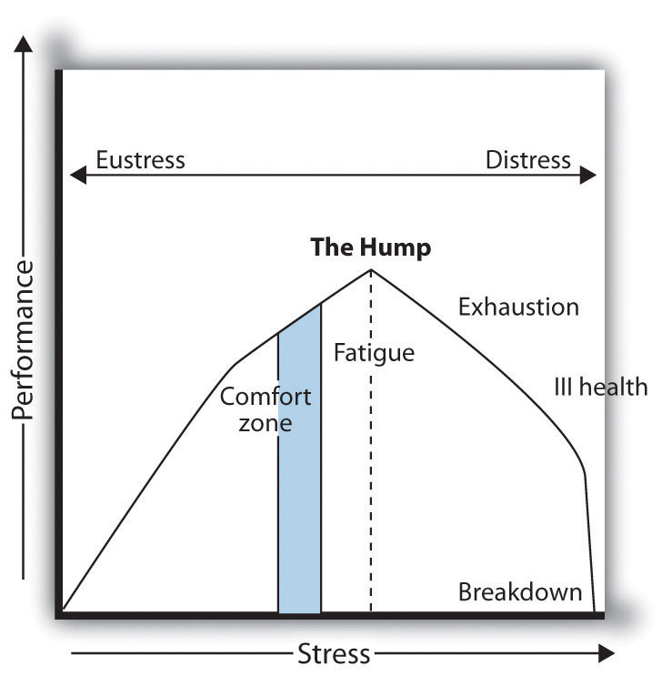
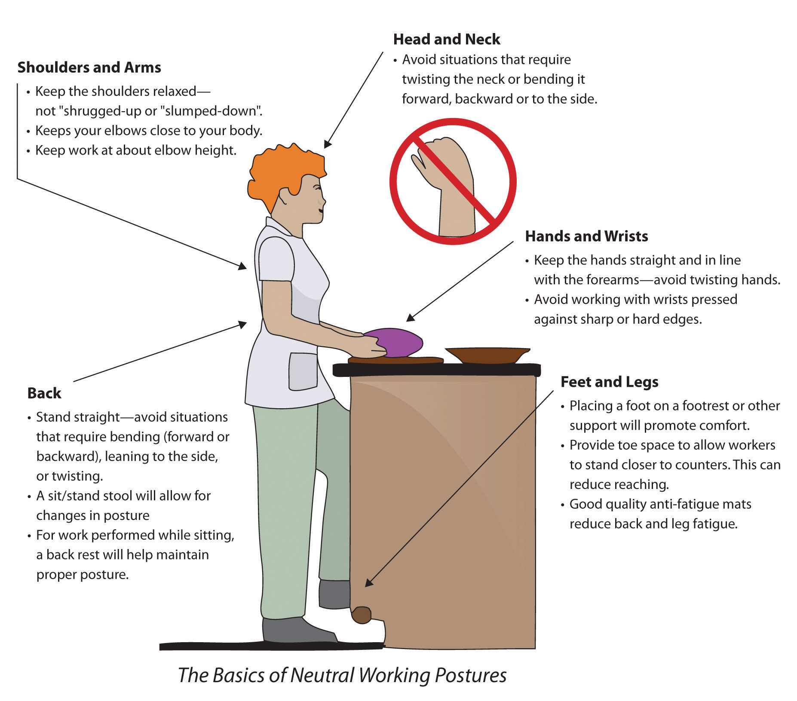
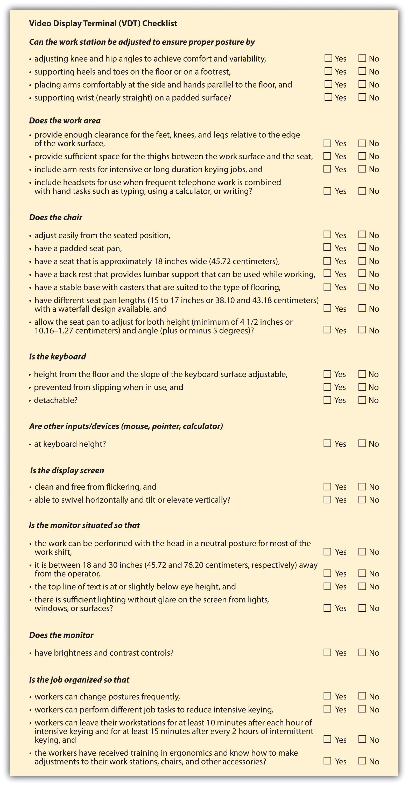

While OSHA covers many areas relating to health and safety at work, a few other areas are also important to mention. Stress management, office-related injuries such as carpal tunnel syndrome, and no-fragrance areas are all contemporary issues surrounding employee health and safety. We will discuss these issues in this section.
In its annual survey on stress in America,American Psychological Association, “Key Findings,” news release, n.d., accessed April 17, 2011, http://www.apa.org/news/press/releases/stress/key-findings.aspx. the American Psychological Association found that money (76 percent), work (70 percent), and the economy (65 percent) remain the most oft-cited sources of stress for Americans. Job instability is on the rise as a source of stress: nearly half (49 percent) of adults reported that job instability was a source of stress in 2010 (compared to 44 percent in 2009). At the same time, fewer Americans are satisfied with the ways their employers help them balance work and nonwork demands (36 percent in 2010 compared to 42 percent in 2009). The implications of these findings are obviously important for HRM professionals.
Before we discuss what HR professionals can do, let’s discuss some basic information about stress. As it is currently used, the term stress was coined by Hans Selye in 1936, who defined it as “the nonspecific response of the body to any demand for change.” The American Institute of Stress, accessed September 15, 2011, http://www.stress.org/topic-definition-stress.htm. In other words, we can say that stressThe reaction we have to a stressor. is the reaction we have to a stressor. A stressorSome activity, event, or other stimulus that causes either a positive or a negative response in the body. is some activity, event, or other stimulus that causes either a positive or negative reaction in the body. Despite what people may think, some stress is actually good. For example, receiving a promotion at work may cause stress, but this kind of stress is considered to be positive. Stress is very much a personal thing, and depending on individual personalities, people may have different opinions about what is a stressor and what is not. For example, a professor does not normally find public speaking to be a stressor, while someone who does not do it on a daily basis may be very stressed about having to speak in public.
While we all feel stressed sometimes, these funny videos show what not to do to manage stress.
Selye recognized that not all stress is negative. Positive stress is called eustressA type of stress that is healthy and gives a feeling of fulfillment and other positive feelings.. This type of stress is healthy and gives a feeling of fulfillment and other positive feelings. Eustress can cause us to push ourselves harder to meet an end goal. On the other hand, distressThe term used for negative stress. is the term used for negative stress. While eustress can push us, distress does not produce positive feelings and can go on for a long time without relief. We can further classify distress by chronic stressProlonged exposure to stress and acute stress, which is short-term high stress., which is prolonged exposure to stress, and acute stress, which is short-term high stress. For example, someone who receives little or no positive result from stress and is continuously stressed may experience chronic stress. Acute stressA type of stress that occurs in shorter bursts. occurs in shorter bursts and may be experienced while someone is on a tight deadline for a project.
Two other terms related to stress are hyperstress and hypostress. HyperstressA type of stress in which there are extremes with little or no relief for a long period of time, normally resulting in burnout. is a type of stress in which there are extremes with little or no relief for a long period of time. This type of stress often results in burnout. HypostressThe lack of eustress or distress in someone’s life. is the lack of eustress or distress in someone’s life. Remember, some stress can be good and pushes us to work harder. We see this type of stress with people who may work in a factory or other type of repetitive job. The effect of this type of stress is usually feelings of restlessness.
Figure 13.3 The Stress Curve
Source: Adapted from P. Nixon, 1979.
One last important thing to note is how a person goes through the cycle of stress. Figure 13.3 "The Stress Curve" shows an example of how stress is good up to a point, but beyond that point, the person is fatigued and negatively affected by the stress. Bear in mind, this varies from person to person based on personality type and stress-coping mechanisms.
As you have already guessed, stress on the job creates productivity issues, which is why it concerns HR professionals. We know that stress can cause headaches, stomach issues, and other negative effects that can result in lost productivity but also result in less creative work. Stress can raise health insurance costs and cause employee turnover. Because of this, according to HR Magazine,Kathryn Tyler, “Stress Management,” HR Magazine, September 1, 2006, accessed April 19, 2011, http://www.shrm.org/Publications/hrmagazine/EditorialContent/Pages/0906tyler.aspx. many employers are taking the time to identify the chief workplace stressors in employees’ lives. With this information, steps can be taken to reduce or eliminate such stress.
PricewaterhouseCoopers, for example, implemented several strategies to reduce stress in its workplace. The firm restructured its work teams so that rather than having one employee work with one client, teams of employees work with groups of clients. Rather than having an employee say, “I can’t go to my son’s baseball game because I need to wait for this client call,” this arrangement allows employees to cover for each other.
The organization also requires employees to take vacation time and even promotes it with posters throughout the office. In fact, even weekends are precious at PricewaterhouseCoopers. If an employee sends an e-mail on the weekend, a popup screen reminds her or him it is the weekend and it is time to disconnect.
Here are the most common stressors for college students:
Offering flextime is also a way to reduce employee stress. It allows employees to arrange their work and family schedule to one that reduces stress for them. This type of creative scheduling, according to Von Madsen, HR manager at ARUP Laboratories,Kathryn Tyler, “Stress Management,” HR Magazine, September 1, 2006, accessed April 19, 2011, http://www.shrm.org/Publications/hrmagazine/EditorialContent/Pages/0906tyler.aspx. allows employees to work around a schedule that suits them best. Other creative ways to reduce stress might be to offer concierge services, on-site child care, wellness initiatives, and massage therapy. All these options can garner loyalty and higher productivity from employees.
What does your organization do to reduce stress? What should it do that it is not doing?
Cumulative trauma disorders (CTDs)Injury to the fingers, hands, arms, or shoulders, which is the result of repetitive motions such as typing. are injuries to the fingers, hands, arms, or shoulders that result from repetitive motions such as typing.
Carpal tunnel syndromeA cumulative disorder of the hand and wrist as a result of too much computer work., or CTS, is a common cumulative disorder in which the hand and wrist is particularly affected. CTS is a disabling syndrome that fortunately can be prevented or at least minimized. According to one study of CTS,A. C. Matias, G. Salvendy, and T. Kuczek, Ergonomics Journal 41, no. 2 (1998): 213–26, accessed April 19, 2011, http://www.ncbi.nlm.nih.gov/pubmed/9494433. the percentage of a workday at a computer, posture while at the workstation, and the individual’s body features all contribute to this workplace issue. More recently, CTD can be found in people who text a lot or use their smartphones to type or surf the Internet.
There are a number of keyboards, chairs, and other devices that can help limit or prevent CTD issues. CTD disorders cost companies money through higher health-care costs and workersworker’s compensation#8217; compensation payments. CTD is a required recordable case under OSHA. OSHA has voluntary employer guidelines for reducing CTD in specific industries such as poultry processing, shipyards, retail grocery, and nursing homes. OSHA is currently developing standards for industry-specific and task-specific jobs.“OSHA Protocol for Developing Industry-Specific and Task-Specific Ergonomics Guidelines,” Occupational Safety and Health Administration, accessed April 25, 2011, http://www.osha.gov/SLTC/ergonomics/protocol.html.
Microsoft is attempting to relieve CTD by developing “surface” technology. First introduced in 2007, the system is controlled through intuitive touch rather than the traditional mouse and keyboard. Microsoft and Samsung in early 2011 introduced the newest consumer-ready product, which looks like a large tablet (or iPad) used to perform the same functions as one normally would on her computer.Microsoft News Center, “Microsoft and Samsung Unveil the Next Generation of Surface,” news release, January 2011, accessed August 21, 2011, http://www.microsoft.com/presspass/press/2011/jan11/01-06mssurfacesamsungpr.mspx.
Figure 13.4 Example of an OSHA Standard for Retail Grocery Stores to Avoid CTD
Source: http://www.osha.gov/ergonomics/guidelines/retailgrocery/retailgrocery.html#storewide (accessed September 2, 2011).
To Tell or Not?
You work for a large multinational organization as a manager on the factory floor. One of your employees was moving large barrels of chemicals from one workstation to another, when the barrel burst and gave him mild burns. When you talk with him about it, he says it was his own fault, and he doesn’t want to take any days off or see a doctor. How would you handle this?
How Would You Handle This?
https://api.wistia.com/v1/medias/1360951/embedThe author discusses the How Would You Handle This situation in this chapter at: https://api.wistia.com/v1/medias/1360951/embed.
In 1984, only 25 percent of people used computers at work, and today that number is 68 percent.“Survey Shows Widespread Enthusiasm for High Technology,” NPR Online, n.d., accessed August 20, 2011, http://www.npr.org/programs/specials/poll/technology/. Awareness of the effects of computer monitors and other similar terminals are necessary to ensure a healthy workplace. Vision problems; fatigue; eye strain; and neck, back, arm, and muscle pain are common for frequent users of VDTs. OSHA recommands taking a break after every hour on a computer screen and reducing glare on screens. Proper posture and seat adjustment also limits the amount of injuries due to VDTs.
Figure 13.5 VDT Checklist to Reduce Workplace Injuries
The EEOC defines a disability as a physical or mental impairment that substantially limits one or more of the major life activities of individuals and the ability to provide evidence of such an impairment.“Section 902: Definition of the Term Disability,” Equal Employment Opportunity Commission, accessed April 25, 2011, http://www.eeoc.gov/policy/docs/902cm.html#902.1. Because of this definition, people who have multiple chemical sensitivity (MCS) or environmental illness (EI)The inability to tolerate an environmental chemical or class of foreign chemicals. are eligible for reasonable accommodations in the workplace. MCS or EI is the inability to tolerate an environmental chemical or class of foreign chemicals. Symptoms can include headache, dizziness, inability to breathe, muscle pain, and many more depending on the person. As a result, implementing policies surrounding MCS may be not only a legal requirement but a best practice to keep employees safe and healthy in the workplace. Some examples of such policies might include the following:
If an organization is going to implement a fragrance-free work policy, this is normally addressed under the dress code area of the organization’s employee manual. However, many employers are reluctant to require employees to refrain from wearing or using scented products. In this case, rather than creating a policy, it might be worthwhile to simply request a fragrance-free zone from employees through e-mail and other means of communication. An example of such a policy is used by Kaiser Permanente:
We recognize that exposure to strong scents and fragrances in the environment can cause discomfort, as well as directly impact the health of some individuals. Since we hope to support a healthful environment for employees, physicians, and visitors, it is the intent of Quality and Operations Support to strive for a fragrance-controlled workplace. Therefore, for the comfort and health of all, use of scents and fragrant products by QOS employees, other than minimally scented personal care products, is strongly discouraged. Kaiser Permanente Fragrance Policy, accessed September 15, 2011, http://users.lmi.net/wilworks/ehnlinx/k.htm.
OSHA, as we mentioned earlier, has certain standards for how chemicals should be handled and how they should be labeled. Chemicals should be labeled in English, and employees must be able to cross-reference the chemicals to the materials safety data sheet, which describes how the chemicals should be handled.
It is estimated that 1,200 new chemicals are developed in North America alone every year.International Labor Organization, “Your Safety and Health at Work: Chemicals in the Workplace,” accessed April 25, 2011, http://actrav.itcilo.org/actrav-english/telearn/osh/kemi/ciwmain.htm. For many of these chemicals, little is known about their immediate or long-term effects on the health of workers who come into contact with them. As a result, policies should be developed on how chemicals should be handled, and proper warnings should be given as to the harmful effects of any chemicals found in a job site.
In the United States, twenty-six of the fifty states have smoking bans in enclosed public spaces. These smoking bans are designed to protect workers’ health from the dangers of secondhand smoke. A recent report released by the Centers for Disease Control and PreventionJulie Steenhuysen, “26 US States Have Comprehensive Smoking Bans,” Reuters, April 21, 2011, accessed April 25, 2011, http://www.reuters.com/article/2011/04/21/usa-smoking-idUSN2128332820110421. says that state or local smoke-free laws cover 47.8 percent of workplaces. The report says if the trend continues, the United States will be 100 percent smoke free by 2020. Many companies implement no-smoking policies because of health-care costs, and some companies, such as Humana, Inc., say their no-tobacco policy is simply setting a good example (since they are a health-care organization). Humana tests all applicants for tobacco in a preemployment screening that applies to all tobacco products.“Insurer Humana Inc. Won’t Hire Smokers in Arizona,” Associated Press, June 30, 2011, accessed August 20, 2011, http://finance.yahoo.com/news/Insurer-Humana-Inc-wont-hire-apf-961910618.html?x=0&.v=1. Most workplaces have no-smoking policies, and some even prefer not to hire smokers because of the higher cost of health care. Policies dealing with substances and chemicals are an important part of any employee training and orientation.
For the employees
For the employer
Sample smoking policy
Because we recognize the hazards caused by exposure to environmental tobacco smoke, it shall be the policy of ____________ to provide a smoke-free environment for all employees and visitors. This policy covers the smoking of any tobacco product and the use of oral tobacco products or "spit" tobacco, and it applies to both employees and nonemployee visitors of ____________.
Source: American Cancer Society, http://www.cancer.org/Healthy/StayAwayfromTobacco/Smoke-freeCommunities/CreateaSmoke-freeWorkplace/smoking-in-the-workplace-a-model-policy (accessed August 20, 2011).
Drugs and alcohol are discussed in Chapter 10 "Managing Employee Performance" on managing performance issues. Substance abuse in the workplace can cause many problems for the organization. Not only does it create impaired ability to perform a job—resulting in more accidents—but it results in more sick days and less productivity, and substance abusers are more likely to file workersworker’s compensation#8217; compensation claims. Keep in mind that taking prescription drugs, if not used in the proper amounts or used long after the prescribed use, is considered substance abuse. A drug-free policy, according to OSHA,“Workplace Substance Abuse,” Occupational Safety and Health Administration, accessed August 20, 2011, http://www.osha.gov/SLTC/substanceabuse/index.html. has five parts:
According to the National Clearinghouse for Alcohol and Drug Information, substance abuse costs companies over $100 billion in the United States alone.T. Buddy, “Substance Abuse in the Workplace,” About.com, November 20, 2011, accessed August 20, 2011, http://alcoholism.about.com/cs/work/a/aa990120.htm. This staggering figure alone makes it worthwhile for companies to implement a policy and training on substance abuse.
This video provides some advice on how to deal with employee personal problems, including drug abuse.
According to OSHA, 2 million American workers are victims of workplace violence every year.“Workplace Violence” (OSHA Fact Sheet), Occupational Safety and Health Administration, accessed April 25, 2011, http://www.osha.gov/OshDoc/data_General_Facts/factsheet-workplace-violence.pdf. OSHA addresses some of the workers who are at increased risk for workplace violence:
It is up to the organization and human resources to implement policies to ensure the safety of workers and provide a safe working environment. OSHA provides tips to provide a safer workplace:
Development of workplace policies surrounding these items is important. Ongoing training and development in these areas are key to the creation of a safe workplace. While outside influences may affect employee safety, it is also important to be aware of the employee’s safety from other employees. There are several indicators of previolence as noted by the Workplace Violence Research Institute:Jurg Mattman, “Pre-Incident Indicators,” Workplace Violence Research Institute, June 2010, accessed April 27, 2011, http://www.nesdis.noaa.gov/RESPECT/pdf/RESPECT-Pre-IncidentIndicators24Jun09.pdf.
A video on workplace violence training.
Please view this video at http://www.youtube.com/watch?v=oiuWLkdUZ5o.
Anyone exhibiting one or more of these preincident indicators should get the attention of HRM. The HR professional should take appropriate action such as discussing the problem with the employee and offering counseling.
Workplace bullyingA tendency of individuals or groups to use persistent or repeated aggressive or unreasonable behavior against a coworker or subordinate. is defined as a tendency of individuals or groups to use persistent or repeated aggressive or unreasonable behavior against a coworker or subordinate. The Workplace Bullying Institute found that 35 percent of workers have reported being bullied at work. This number is worth considering, given that workplace bullying reduces productivity with missed work days and turnover. The Workplace Bullying Institute found that litigation and settlement of bullying lawsuits can cost organizations $100,000 to millions of dollars, in addition to the bad publicity that may be created. Examples of workplace bullying include the following:
In an Indiana Supreme court case, a hospital employee who was repeatedly bullied by a surgeon sued for emotional distress and won. This ruling drew national attention because it was an acknowledgment by the courts of the existence of workplace bullying as a phenomenon.Karen Klein, “Employers Can’t Ignore Workplace Bullies,” Bloomberg Businessweek, May 7, 2008, accessed August 20, 2011, http://www.businessweek.com/smallbiz/content/may2008/sb2008057_530667.htm. Prevention of workplace bullying means creating a culture in which employees are comfortable speaking with HR professionals and managers (assuming they are not the ones bullying) about these types of situations. Similar to traditional bullying, cyberbullyingA type of bullying in which Internet or technology is used to send text intended to hurt or embarrass another person. is defined as use of the Internet or technology used to send text that is intended to hurt or embarrass another person. Examples include using Facebook to post negative comments or setting up a fake e-mail account to send out fake e-mails from that person. Comments or blogs and posts that show the victim in a bad light are other examples of cyberbullying. Similar to workplace bullying, cyberbullying is about power and control in workplace relationships. Elizabeth Carll’s research on cyberbullying shows that people who experience this type of harassment are more likely to experience heightened anxiety, fear, shock, and helplessness, which can result in lost productivity at work and retention issues,Madeleine White, “Are Cyber Bullies Worse for Victims than Real Bullies?” Globe and Mail, August 8, 2011, accessed August 20, 2011, http://www.theglobeandmail.com/life/the-hot-button/are-cyber-bullies-worse-for-victims-than-real-bullies/article2122943/ a major concern for the HR professional. The US Justice Department shows that some 850,000 adults have been targets of online harassment.Madeleine White, “Are Cyber Bullies Worse for Victims than Real Bullies?” Globe and Mail, August 8, 2011, accessed August 20, 2011, http://www.theglobeandmail.com/life/the-hot-button/are-cyber-bullies-worse-for-victims-than-real-bullies/article2122943/. Many states, including New York, Missouri, Rhode Island, and Maryland, have passed laws against digital harassment as far back as 2007.National Conference of State Legislatures, “State Cyberstalking, Cyberharassment, and Cyberbullying Laws,” January 26, 2011, accessed August 20, 2011, http://www.ncsl.org/default.aspx?tabid=13495. In a recent cyberbullying case, a US Court of Appeals upheld a school’s discipline of a student for engaging in off-campus cyberbullying of another student.Daniel Solove, “Off Campus Cyberbullying and the First Amendment,” Huffington Post, July 28, 2011, accessed August 20, 2011, http://www.huffingtonpost.com/daniel-j-solove/offcampus-cyberbullying-a_b_911654.html. In the case, the victim said a MySpace profile was created that included inappropriate pictures of her, and the page’s creator invited other people to join. The student who created the page sued the school after she was disciplined for it, saying it violated her right to free speech, but courts found that students do not have the right to cyberbully other students. While it seems that cyberbullying is for young people, as mentioned earlier, 35 percent of American workers feel they have been bullied. Bullying should be identified immediately and handled, as it affects workplace productivity, customer satisfaction, and eventually, profits.
This video provides tips on how to deal with a workplace bully.
In today’s world of identity theft, it is important that HR professionals work to achieve maximum security and privacy for employees. When private information is exposed, it can be costly. For example, in March of 2011, the Texas Comptroller’s office inadvertently disclosed on a public website the names, addresses, and social security numbers of 3.5 million state workers.Patricia Hart, “Attorneys Seek to Question Texas Comptroller Over Exposed Info,” Houston Chronicle, April 26, 2011, accessed April 27, 2011, http://www.chron.com/disp/story.mpl/metropolitan/7537769.html. The state has already spent $1.8 million to remedy this problem by sending letters to affected parties and hiring technology consultants to review office procedures. While keeping employee information private is the responsibility of all management in an organization, ensuring privacy remains the job of the HR professional.
Some of the things to combat employee identity theft include the following:
Another privacy issue that comes up often is the monitoring of employee activities on devices that are provided to them by the organization. Case law, for the most part, has decided that employees do not have privacy rights if they are using the organization’s equipment, with a few exceptions. As a result, more than half of all companies engage in some kind of monitoring. According to an American Management Association“Electronic Monitoring and Surveillance Survey,” American Management Association, 2007, accessed April 27, 2011, http://press.amanet.org/press-releases/177/2007-electronic-monitoring-surveillance-survey/. survey, 73 percent of employers monitor e-mail messages and 66 percent monitor web surfing. If your organization finds it necessary to implement monitoring policies, ensuring the following is important to employee buy-in of the monitoring:
Working with your IT department to implement standards and protect employee data kept on computers is a must in today’s connected world. Communication of a privacy policy is an important step as well. Agrium, a Canadian-based supplier of agricultural products in North America, states its employee privacy policy on its website and shares with employees the tactics used to prevent security breaches.“Employee Privacy Policy,” Agrium Inc., accessed August 21, 2011, http://www.agrium.com/employee_privacy.jsp.
At Agrium we are committed to maintaining the accuracy, confidentiality, and security of your personal information. This Privacy Policy describes the personal information that Agrium collects from or about you, and how we use and to whom we disclose that information.
Since the 9/11 attacks, terrorism and its effect on the workplace are in the forefront of the HR professional’s mind. Planning for evacuations is the job of everyone in an organization, but HR should initiate this discussion. OSHA provides free assistance in implementing plans and procedures in case of a terror attack. OSHA also provides a fill-in-the-blank system (http://www.osha.gov/SLTC/etools/evacuation/expertsystem/default.htm) to help organizations write a comprehensive report for evacuations and terrorist attacks.
Employee health and safety is a must in today’s high-stress work environments. Although some may see employee health as something that shouldn’t concern HR, the increasing cost of health benefits makes it in the best interest of the company to hire and maintain healthy employees. In fact, during the recession of the late 2000s, when cutbacks were common, 50 percent of all workplaces increased or planned to increase investments in wellness and health at their organization.Donald Sears, “Gym Memberships and Wellness Programs Remain Standard Employee Benefits,” The Ladders Career Line, July 21, 2009, accessed April 27, 2011, http://www.career-line.com/job-search/gym-memberships-and-wellness-programs-remain-standard-employee-benefits/.
Cordis (A Johnson & Johnson Company) Environmental, Health, and Safety Policy
Cordis Corporation is committed to global Environmental, Health, and Safety (EHS) performance and leadership with respect to its associates, customers, suppliers, contractors, visitors, and communities. To fulfill this commitment, Cordis Corporation conducts its business emphasizing regulatory compliance and collaboration.
We strive for:
We affirm that EHS is:
We believe that:
A safe culture doesn’t happen by requiring training sessions every year; it occurs by creating an environment in which people can recognize hazards and have the authority and ability to fix them. Instead of safety being a management focus only, every employee should take interest by being alert to the safety issues that can exist. If an employee is unable to handle the situation on his or her own, the manager should then take suggestions from employees seriously; making the change and then communicating the change to the employee can be an important component of a safe and healthy workplace.
A culture that promotes safety is one that never puts cost or production numbers ahead of safety. You do not want to create a culture in which health and safety priorities compete with production speedup, which can lead to a dangerous situation.
Another option to ensure health and safety is to implement an employee assistance program (EAP)A benefit intended to help employees with personal problems that could affect their performance at work.. This benefit is intended to help employees with personal problems that could affect their performance at work. The EAP usually includes covered counseling and referral services. This type of program can assist employees with drug or alcohol addictions, emotional issues such as depression, stress management, or other personal issues. Sometimes these programs are outsourced to organizations that can provide in-house training and referral services to employees. For example, REI (Recreation Equipment Inc.), based in Seattle, has a comprehensive EAP for its employees in both retail stores and corporate offices.
Possible techniques you can implement to have a safe and healthy work environment include the following: